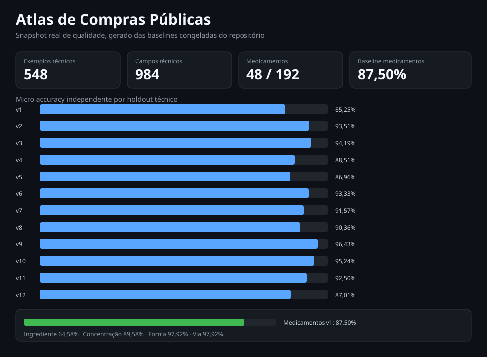

Snapshot real de qualidade
Gerado exclusivamente das baselines congeladas e versionadas do Atlas. Nenhum valor deste snapshot é estimado ou fictício.
Exemplos técnicos
548
Campos técnicos
984
Medicamentos
192
Baseline medicamentos
88,93%

Holdouts técnicos independentes
| Benchmark | Exemplos | Campos | Micro accuracy |
|---|---|---|---|
| v1 | 33 | 61 | 85,25% |
| v2 | 41 | 77 | 93,51% |
| v3 | 45 | 86 | 94,19% |
| v4 | 45 | 87 | 88,51% |
| v5 | 48 | 92 | 86,96% |
| v6 | 48 | 90 | 93,33% |
| v7 | 48 | 83 | 91,57% |
| v8 | 48 | 83 | 90,36% |
| v9 | 48 | 84 | 96,43% |
| v10 | 48 | 84 | 95,24% |
| v11 | 48 | 80 | 92,50% |
| v12 | 48 | 77 | 87,01% |
Medicamentos: baselines independentes v1–v4
| Benchmark | Exemplos | Campos | Corretos | Micro accuracy |
|---|---|---|---|---|
| v1 | 48 | 192 | 168 | 87,50% |
| v2 | 48 | 192 | 153 | 79,69% |
| v3 | 48 | 192 | 173 | 90,10% |
| v4 | 48 | 192 | 189 | 98,44% |
| Total ponderado | 192 | 768 | 683 | 88,93% |
Medicamentos: acurácia ponderada por campo
| Campo | Acurácia v1–v4 |
|---|---|
| Ingrediente ativo | 73,44% |
| Concentração | 96,35% |
| Forma farmacêutica | 93,23% |
| Via | 92,71% |
Este snapshot mede qualidade metodológica dos artefatos congelados. Regressões pós-tuning 100% são documentadas separadamente e não substituem as baselines independentes. Painéis de preços, homologações e sinais exigem uma base DuckDB analítica consolidada e não são simulados aqui.